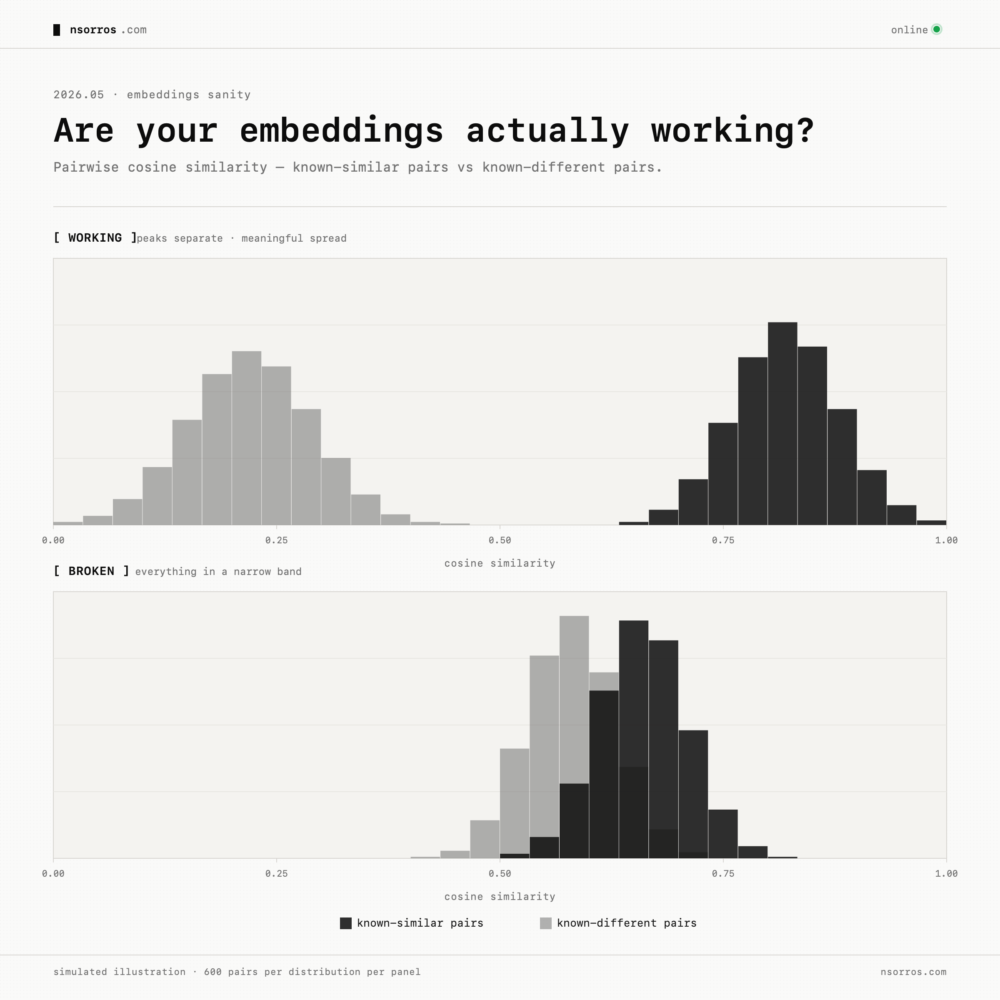
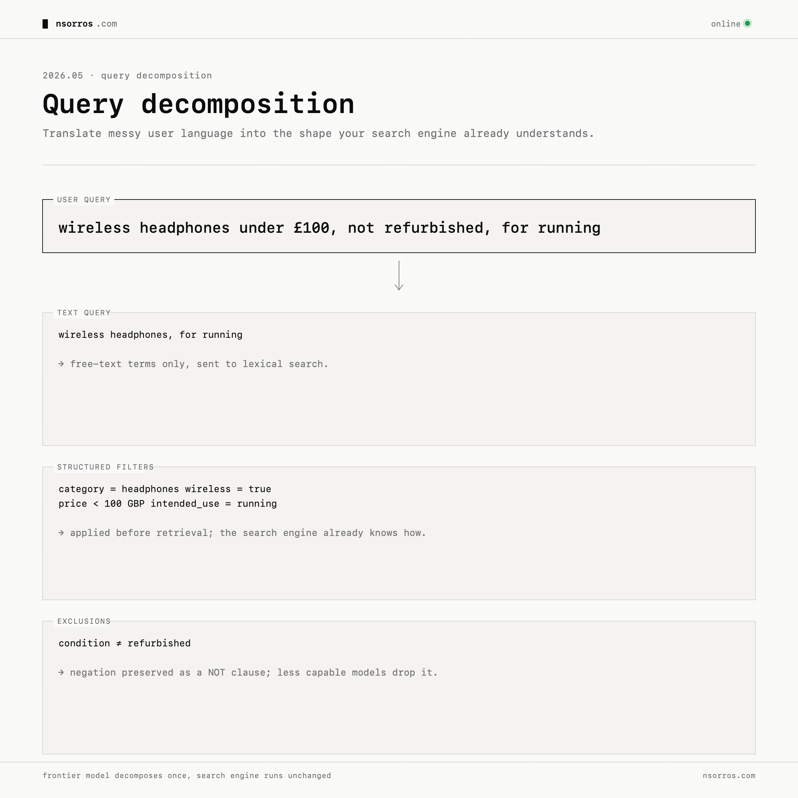
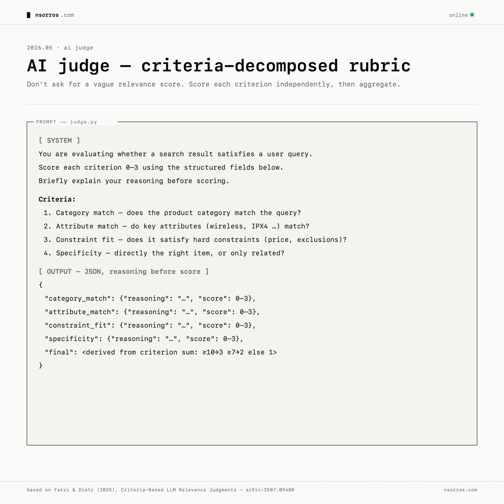

AI in search — embeddings is not a strategy
The first thought, when it comes to adding AI to search is most likely embeddings, a semantic representation that promises to retrieve related matches that would be missed from keyword match alone. This is true but incorporating embeddings to your search might be less straightforward than you had anticipated. The reason is that embeddings are mostly trained and benchmarked on document-like data. But many real search systems are not searching over documents. They are searching over structured or semi-structured records: products, suppliers, grants, legal matters, tickets, assets, contracts, or clinical trials.
Think of an Amazon-like catalogue. A product is not just a paragraph. It has a title, brand, category, price, colour, size, availability, reviews, tags, seller information, compatibility fields, and a free-text description. If you flatten all of that into one text blob and embed it, you may erase the structure that search actually depends on.
The Issue
This is why embeddings and "semantic search" may underdeliver. The embedding may understand the general meaning of the product description, but fail to preserve distinctions that matter: category, compatibility, size, colour, availability, jurisdiction, date, or whether a field is a hard requirement rather than background context.
There is an easy way to diagnose the issue. Take items you know are similar and confirm their embeddings are close. Take items you know are different and confirm they are far apart. Look at whether similarity scores are meaningfully spread, or whether everything clusters in a narrow band.

When choosing an embedding model, the question is not only "is this model trained on my domain?", it is also "was this model trained or benchmarked on data shaped like mine?" A retail embedding model may still be a poor fit for structured product records if it mostly learned document retrieval. A more general model tested on tables or semi-structured retrieval may be more relevant.
Benchmarks such as STaRK, which evaluates retrieval over semi-structured knowledge bases, and TARGET, which looks at table retrieval, are useful because they focus on format, not just domain. The lesson from this literature is clear: pure embeddings are often weak when the record structure matters. Hybrid approaches tend to do better.
Before we look into hybrid approaches into more detail though let's take a step back and start from the issue which is "what kinds of queries are users asking, and why do they fail today?"
Query Types
In many systems, queries typically fall into the following buckets.
- keyword lookups. A user knows the exact product name, ID, model number, company, SKU, document, or phrase. These usually need strong lexical search, synonyms, analyzers, spelling tolerance, and sensible boosting.
- text-and-filter queries. The user writes natural language, but the query contains structured constraints: "wireless headphones under £100 with noise cancelling," "contracts from Germany after 2022," "suppliers with ISO certification in Spain," or "grants about youth mental health in Wales." These should not be treated as one semantic blob. They should be decomposed into free text plus filters.
- semantic queries. The user describes an intent in language that may not appear in the indexed record: "something comfortable for long flights," "a laptop for light video editing," or "insurance policies that cover climate-related disruption." These benefit from semantic expansion, dense retrieval, or both.
- assistant questions. "Which one should I buy?", "Can I return this?", "What is the policy?", "Which supplier is safest?" Those may not belong in search at all.
Each type will require a slightly different approach to make it work.
A Better Search
Query decomposition
Take text-and-filter queries for example, the most useful move is query decomposition. A frontier model can turn a natural-language query into a text query, structured filters, and exclusions. For example, "wireless headphones under £100, not refurbished, for running" contains a product category, a price constraint, an exclusion, and an intended use. A less capable model may extract the obvious terms and miss the negation. A frontier model can preserve the structure. This is powerful because it improves the existing search engine rather than replacing it. Most mature systems already have useful filtering, field boosting, and keyword matching. The model's job is to translate messy user language into the shape the search engine already understands.

This pattern is supported by work on LLM-driven structured query extraction. Fine-tuned models can convert messy user input into a combination of semantic terms, numerical constraints, and categorical filters that an existing search engine already understands [see]. The domain changes, e-commerce, enterprise search, internal tools but the pattern is the same: do not throw away structure when the user is asking for structure.
Query expansion
For semantic queries, there is an easier step before even looking at embeddings: query expansion. Use a frontier model to generate semantically similar reformulations or a hypothetical result description, then retrieve against those expanded queries. Take the query "running headphones that don't fall out". A short query like that has very few terms in common with a typical product description. A frontier model can expand it into "wireless sports earbuds with secure ear-hook fit, sweat-resistant, IPX4 or higher", or even synthesise a hypothetical product description and embed that.
Work such as Query2doc and HyDE were among the first to explore this strategy but it's one that lasted the test of time. The way it helps is by improving recall, since its changes what enters the candidate set. A reranker cannot recover a result that was never retrieved in the first place.
Reranking
After decomposition and expansion, reranking becomes the layer that fuses and corrects. Retrieve a wider candidate set from lexical search, filters, expansion, and possibly embeddings. Then use a reranker to reorder the candidates based on the full query intent. In production, dedicated cross-encoder rerankers are often a practical starting point because they are cheaper and faster than frontier models. Frontier models are still useful for prototyping, calibration, and generating training data.
There is plenty of research showing that cross-encoders are "very competitive" with GPT-4 as rerankers and "way more efficient" across standard IR benchmarks (Formal et al., 2024), making them the right first production choice, while frontier models earn their keep generating training data and listwise judgments that can be distilled into a custom reranker later (Sun et al., 2023).
AI judge
But none of this matters if you cannot measure whether search improved. This is where AI judges are useful, with one important caveat: do not ask a model for a vague relevance score. Decompose relevance into criteria. For a structured catalogue, criteria might be: does the product category match, do the key attributes match, does it satisfy the constraint, and how specific is the result? A result that fails a hard constraint should not score highly just because it is semantically related.
The judge should see structured fields, not a dumped text blob. It should explain each criterion before scoring. And it should be calibrated against human judgments. The LLM-as-judge literature increasingly supports this direction: criteria-decomposed rubrics (Farzi & Dietz, 2025), few-shot examples, compact grading scales, and periodic human spot checks.

Then compare systems with proper search metrics: nDCG@10 for ranking quality, relevant@10 for how many useful results appear, and a gate-failure rate for hard mismatches. Keep a frozen baseline so you know whether a new version improved search or only changed it.
Conclusion
Adding AI into your search sounds simple but there are a couple of moving components you need to get right, starting from which embeddings or whether you use embeddings at all, to understanding the queries of your users and choosing the right method for the problem. This is without even mentioning fusing results and judging improvements at scale.
What To Pay Attention To
- Pay attention: Mythos + Opus 4.7 — Mythos looks real after Mozilla used it to harden Firefox at scale, while Opus 4.7 is the deployable jump in Claude capabilities that matters because many teams already use Claude and Claude Code for serious work.
- Skip: GPT-5.5 — This feels like the expected OpenAI move: matching the frontier on agentic coding and knowledge work, but not changing the story enough to dwell on.
- Skip: Kimi K2.6 + DeepSeek V4 — These releases keep narrowing the open-model gap, especially on cost, but the evidence still points to them trailing the newest frontier models on the hardest real-world agentic work.
- Skip: Tokenmaxxing — Token consumption is a bad proxy for productivity, though it is worth watching because it may distort software engineering costs, team metrics, and hiring expectations.
- Pay attention: RIP PR / new coding practices — The important shift is that software work is moving upstream from writing and reviewing diffs to describing intent, setting architecture, defining checks, and supervising AI write-review loops.